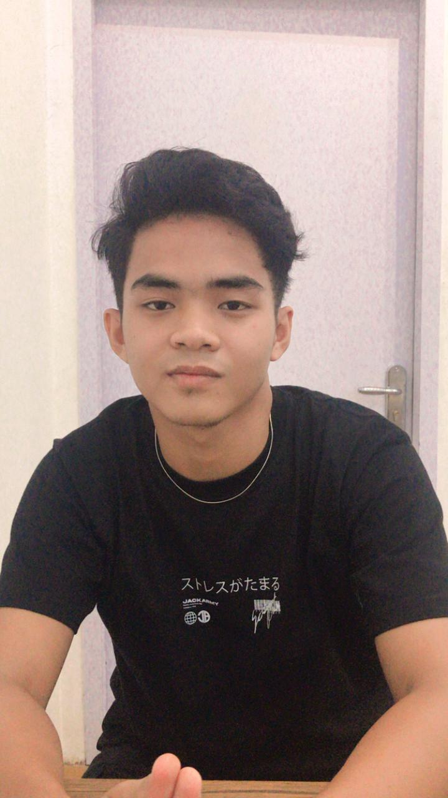

GIAN RIZKY
Selamat Datang di Portofolio aku!
Hai perkenalkan namaku Gian Awalul Rizky Hidayatullah, kawan-kawan bisa memanggilku Gian. Aku salah satu
Mahasiswa aktif di Universitas Islam Riau Angkatan 2021 Fakultas Teknik, Jurusan Teknik Informatika dan terpilih
menjadi Ketua Angkatan Teknik Informatika Angkatan 21. Aku juga salah satu member dari IQ PRIMATECH ini.
aku kelahiran Pekanbaru 7 April 2003 umur 19 tahun.
Kalau boleh jujur, masuk di Jurusan ini membuat aku harus belajar lebih giat lagi, karna apa?
Di SMA aku berasal dari Jurusan IPS yang sama-sama kita tau rata-rata anak Teknik itu berasal dari IPA, hal ini
yang membuat aku untuk lebih extra lagi dalam memahami perkuliahan. Aku bersyukur berjumpa dengan kawan-
kawan yang keren yang ngebantu aku dalam perkuliahan. Dari kawan-kawan kelas yang sangat ngebantu aku, dan
sekarang aku dibantu oleh kawan-kawan PRIMATECH. Nah bagi kawan-kawan yang udah ngelihat Portofolio
aku, ayo sama-sama join di PRIMATECH dan sama-sama kita perbesar PRIMATECH!
Mungkin sekian dulu perkenalan dari aku ya!